Cheap eats in Central & Western 中西區
30 places, from $22. Tap one for prices, hours and the nearest MTR.
 Yat Lok Roast Goose一樂燒鵝 · Central$98
Yat Lok Roast Goose一樂燒鵝 · Central$98  Kau Kee九記牛腩 · Sheung Wan$72
Kau Kee九記牛腩 · Sheung Wan$72 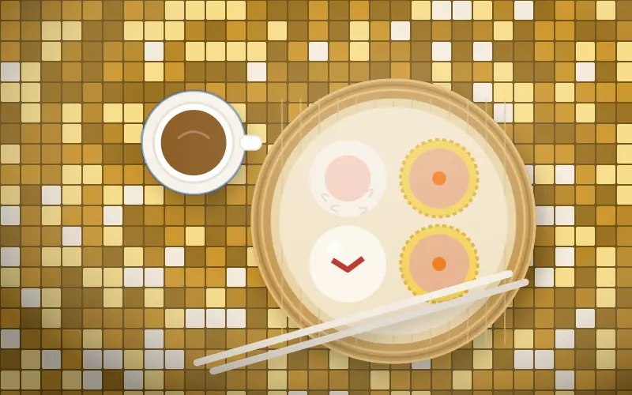
Sun Hing Restaurant新興食家 · Kennedy Town$52 Sang Kee Congee Shop生記粥品專家 · Sheung Wan~$48
Sang Kee Congee Shop生記粥品專家 · Sheung Wan~$48 Mak's Noodle麥奀雲吞麵世家 · Central$68
Mak's Noodle麥奀雲吞麵世家 · Central$68  Chan Kan Kee Chiu Chow陳勤記鹵鵝飯店 · Sheung Wan$82
Chan Kan Kee Chiu Chow陳勤記鹵鵝飯店 · Sheung Wan$82  Kwan Kee Claypot Rice坤記煲仔小菜 · Sai Ying Pun$88
Kwan Kee Claypot Rice坤記煲仔小菜 · Sai Ying Pun$88  Sing Heung Yuen勝香園 · Central$40
Sing Heung Yuen勝香園 · Central$40 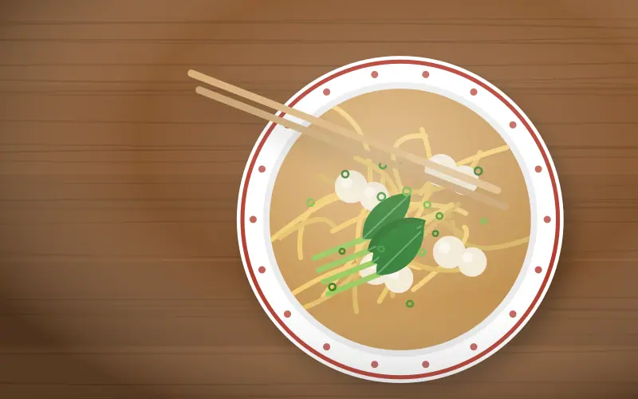
Tsim Chai Kee Noodle沾仔記 · Central~$42 Mak An Kee Noodle麥奀記（忠記）麵家 · Central~$45
Mak An Kee Noodle麥奀記（忠記）麵家 · Central~$45 Tak Fat Beef Balls德發牛丸 · Central~$42
Tak Fat Beef Balls德發牛丸 · Central~$42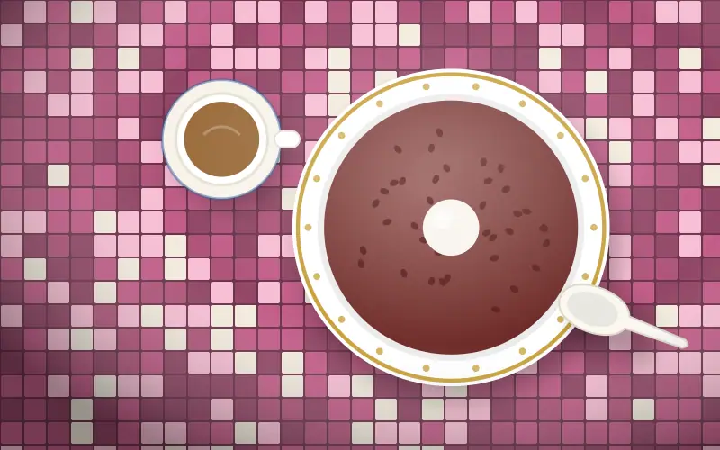
Yuen Kee Dessert源記甜品 · Sai Ying Pun~$30 Tai Cheong Bakery泰昌餅家 · Central$38
Tai Cheong Bakery泰昌餅家 · Central$38 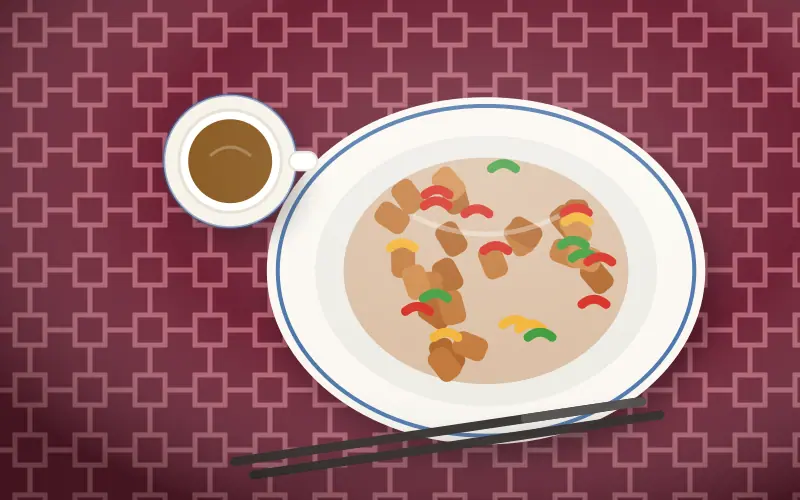
Ser Wong Fun蛇王芬 · Central$118 Shui Kee Coffee瑞記咖啡 · Central~$48
Shui Kee Coffee瑞記咖啡 · Central~$48 Hoi On Cafe海安咖啡室 · Sheung Wan~$38
Hoi On Cafe海安咖啡室 · Sheung Wan~$38 Butao Ramen (Central)豚王（中環） · Central~$98
Butao Ramen (Central)豚王（中環） · Central~$98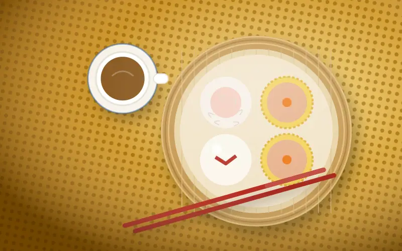
Dim Sum Square聚點坊 · Sheung Wan$62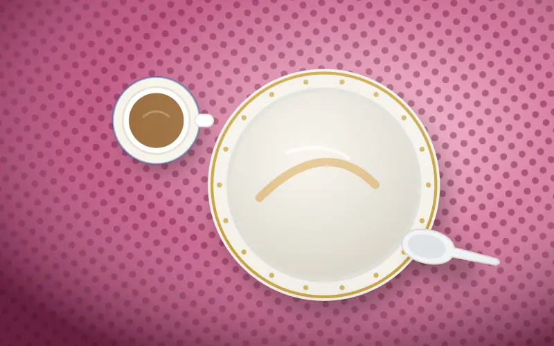
Kung Lee Sugar Cane Juice公利真料竹蔗水 · Central~$22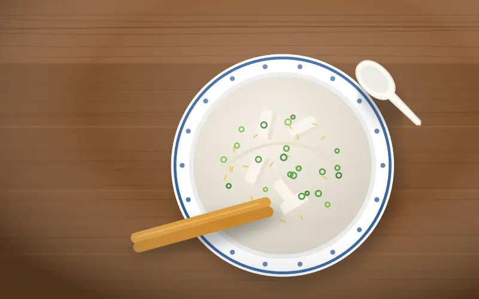
Tasty Congee & Wonton正斗粥麵專家 · Central$98 Lan Fong Yuen蘭芳園 · Central$45
Lan Fong Yuen蘭芳園 · Central$45 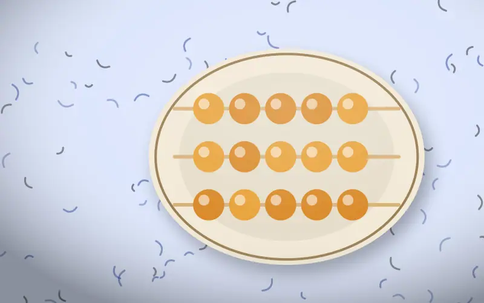
Oddies FoodiesOddies Foodies · Central$58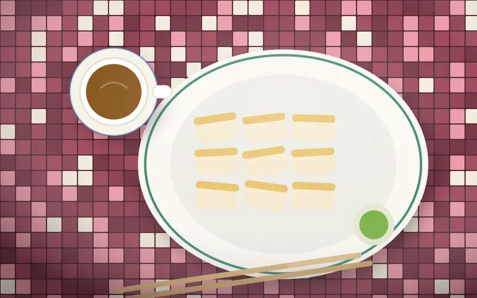
Sing Kee Seafood (Stanley St)盛記海鮮（士丹利街） · Central$118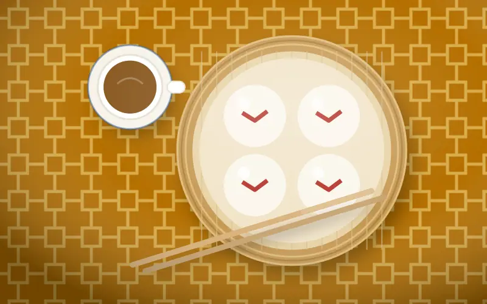
Tim Ho Wan (Hong Kong Station)添好運（香港站） · Central$72 Tsui Wah Restaurant翠華餐廳 · Central$62
Tsui Wah Restaurant翠華餐廳 · Central$62  Chee Kei (Central)池記（中環） · Central$68
Chee Kei (Central)池記（中環） · Central$68 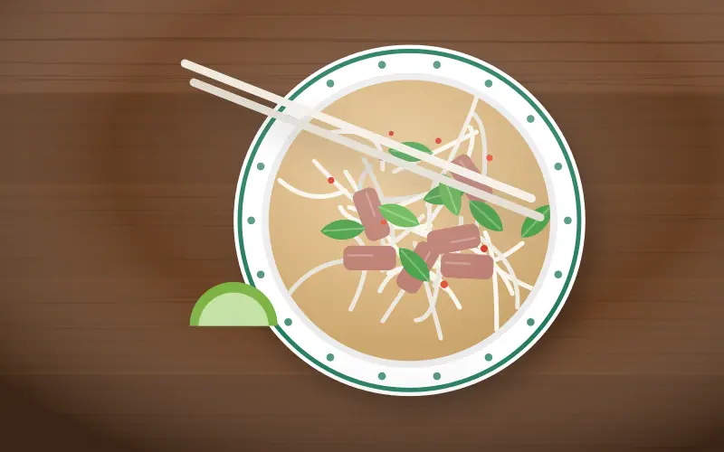
Nha Trang (Central)芽莊越式料理（中環） · Central$98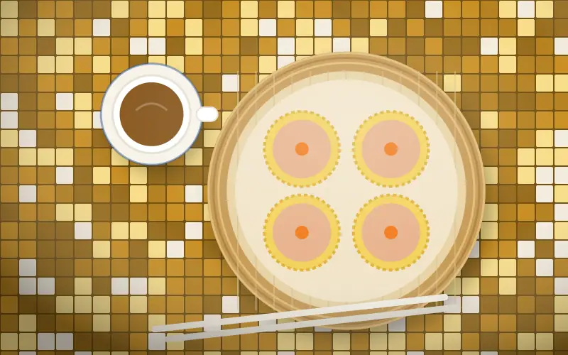
Lin Heung Kui蓮香居 · Sheung Wan$68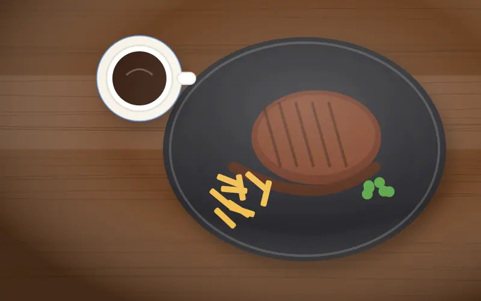
Sammy's Kitchen森美餐廳 · Sheung Wan$138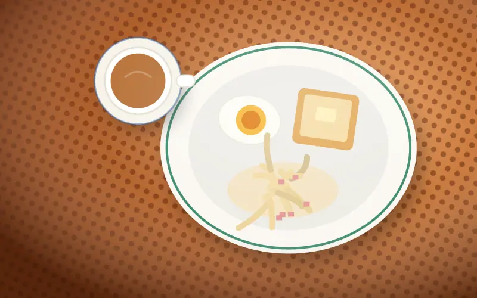
Café de Coral (Kennedy Town)大家樂（堅尼地城） · Kennedy Town$42